잔해가
길을 막았다
바닥과 벽, 계단이 한꺼번에 내려앉았습니다. 구조대원이 들어갈 틈은 사람의 어깨보다 좁습니다.
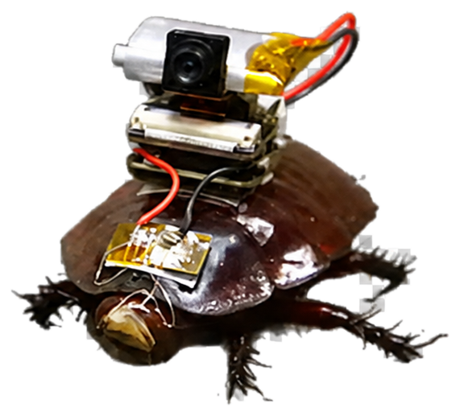
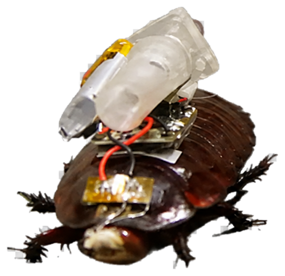
바닥과 벽, 계단이 한꺼번에 내려앉았습니다. 구조대원이 들어갈 틈은 사람의 어깨보다 좁습니다.
호주 퀸즐랜드대와 뉴사우스웨일스대 공동 연구팀은 실제 거대 굴바퀴벌레에 초경량 장비를 달았습니다. 한 마리는 카메라로 탐색하고, 다른 한 마리는 주사 장치를 옮깁니다.
장비 상자가 열리고 두 파라보그가 무너진 건물의 가장 좁은 입구에 놓입니다.
한 마리는 카메라로 위치를 찾고, 다른 한 마리는 원격 자동 주사 장치를 운반합니다. 통로에 따라 앞뒤를 바꾸며 함께 전진합니다.
위아래 콘크리트가 맞닿은 틈. 두 개체는 몸을 낮추고 여섯 다리를 빠르게 움직여 한 뼘 남짓한 공간을 빠져나갑니다.
길은 아래로 꺼졌다가 거의 수직으로 솟습니다. 주사 개체가 먼저 철근을 타고 오르고, 카메라 개체가 뒤에서 길을 확인합니다.
전방이 완전히 막혔습니다. 둘은 좁은 통로 안에서 방향을 돌려 조금 전 지나온 갈림길까지 되돌아갑니다.
두꺼운 잔해가 신호를 가립니다. 영상이 끊겼다가 돌아오는 사이 또 작은 잔해가 떨어집니다. 그래도 두 개체는 서로의 곁을 벗어나지 않습니다.
갈라진 배관이 잔해에 부딪히는 소리였습니다. 두 파라보그는 빈 공간을 확인한 뒤, 더 깊은 통로로 방향을 틉니다.
카메라 화면 끝에 무언가 스칩니다. 그러나 앞은 콘크리트 조각으로 막혀 있습니다. 둘은 몸 하나 겨우 지나는 옆 틈으로 돌아갑니다.
어둠 속에서 손끝이 움직입니다. 카메라 화면에 먼지투성이 얼굴이 잡히고 구조팀에 정확한 위치가 전송됩니다.
의료 개체가 자세를 잡고 주사 장치를 목표 부위에 댑니다. 약물 선택과 투여 판단, 작동은 모두 인간이 통제합니다. 아직 실제 사람에게 적용된 단계는 아닙니다.
구조대원들은 두 파라보그의 영상과 위치를 따라 좁은 틈을 조심스럽게 넓힙니다. 손전등 끝에, 두 개체 곁에서 버티고 있는 같은 남성이 모습을 드러냅니다.
추가 붕괴를 막도록 콘크리트 판을 단단히 받친 뒤, 구조 장비로 천천히 들어 올립니다. 한 대원은 틈을 넓히고 다른 대원은 남성의 몸을 지지합니다. 두 파라보그는 바로 곁에서 위치를 밝힙니다.
남성은 잔해 아래에서 빠져나와 들것에 옮겨집니다. 구조대가 상태를 살피며 건물 밖으로 이송하고, 대기하던 응급차가 병원으로 향합니다.
25차례 모두 목표 지점에 도착했습니다. 이동부터 주입까지 전체 성공률은 72%, 목표 15cm 안의 근거리 주사는 최대 95%였습니다.
현장 안전성과 실제 인체 유효성을 더 검증해야 합니다. 연구진은 서로 다른 역할의 파라보그 무리를 재난 현장에 보내는 미래를 그리고 있습니다.
어둠과 좁은 틈을 견디는 생존력. 우리가 피해 다니던 바퀴벌레의 능력이, 언젠가는 누군가의 생명을 지키는 힘이 될지도 모릅니다.
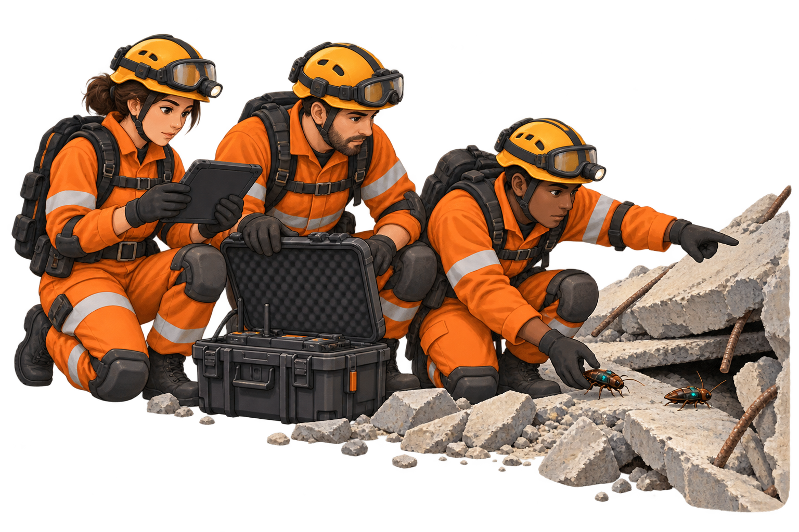
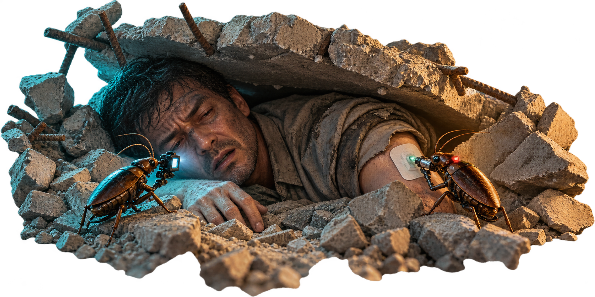
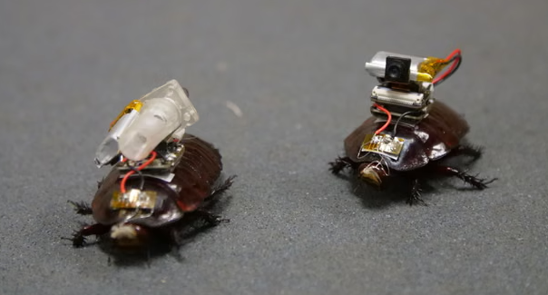
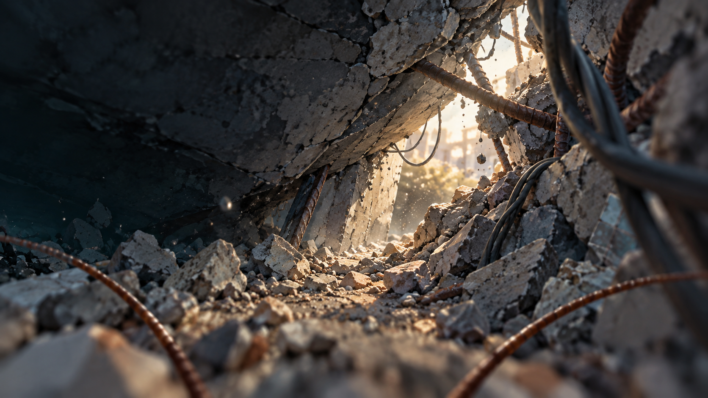
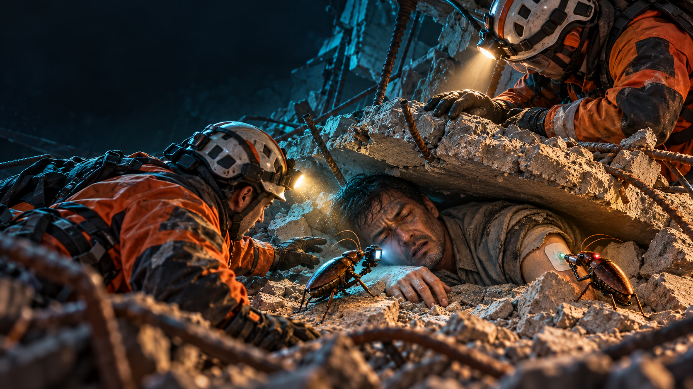
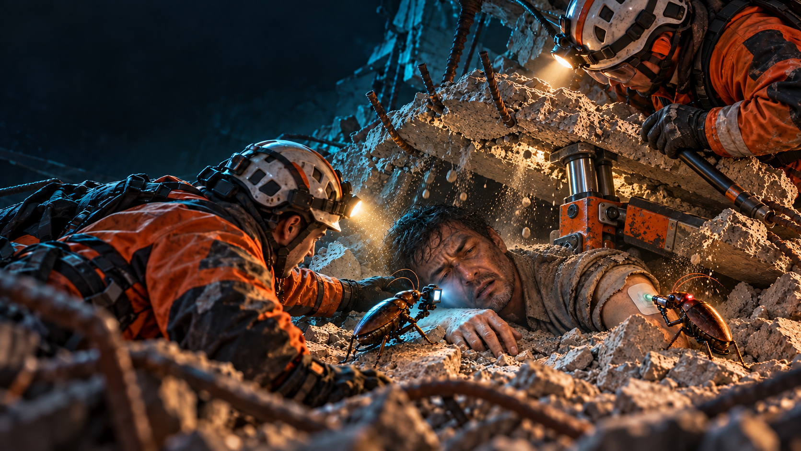
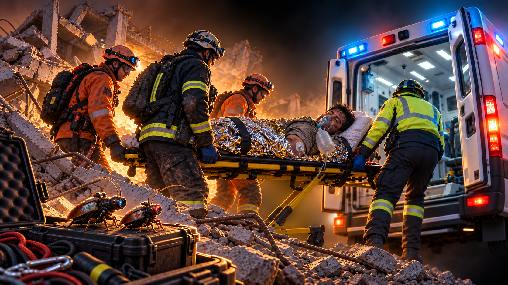
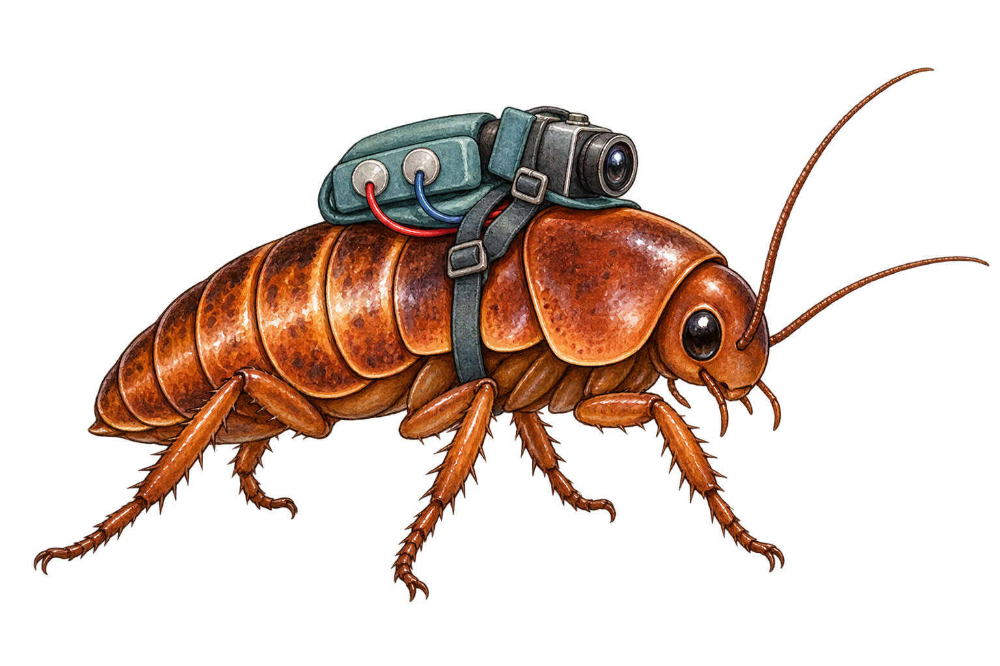
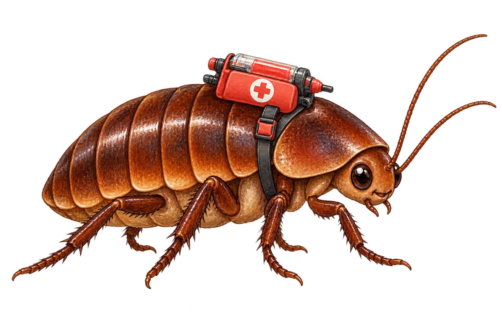
✦✦